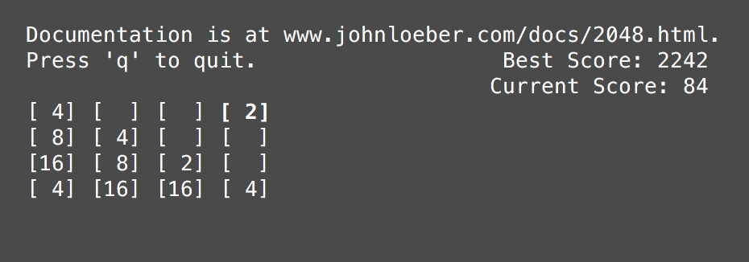

I developed a tool that approximates images with triangles. It's most easily explained by an example:
This is what it looks like in my grey-themed terminal:

I considered making the game colorful, but decided against it, since the game's colorscheme might conflict with a user's terminal's colorscheme. If you want to play a really fancy, colorful version of command-line 2048, then I suggest checking out term2048.
This work is licensed under a Creative Commons Attribution-NonCommercial-ShareAlike 4.0 International License.